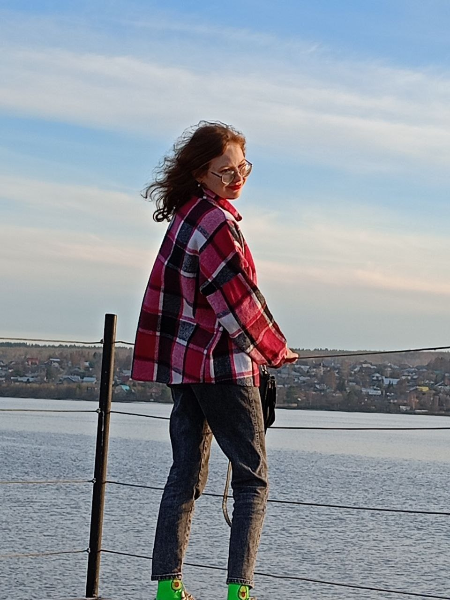
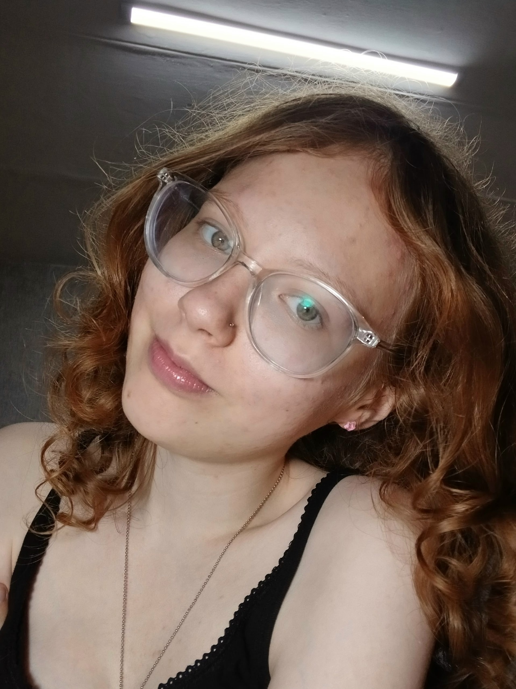
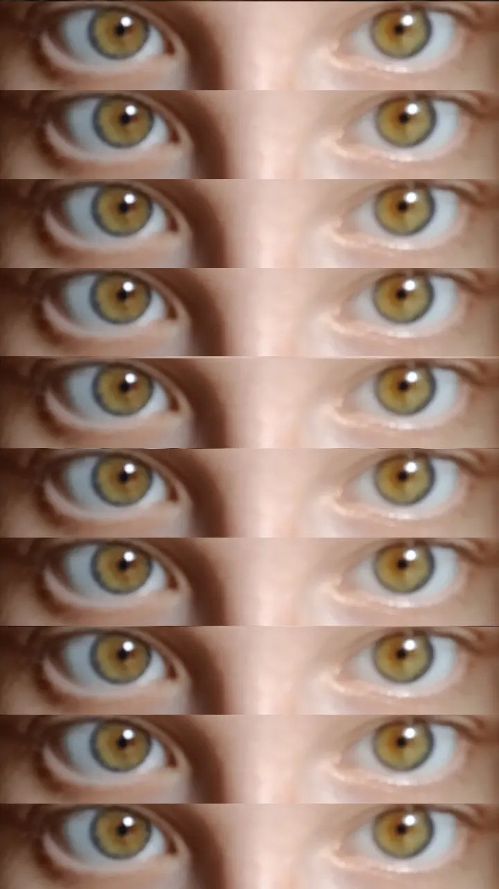
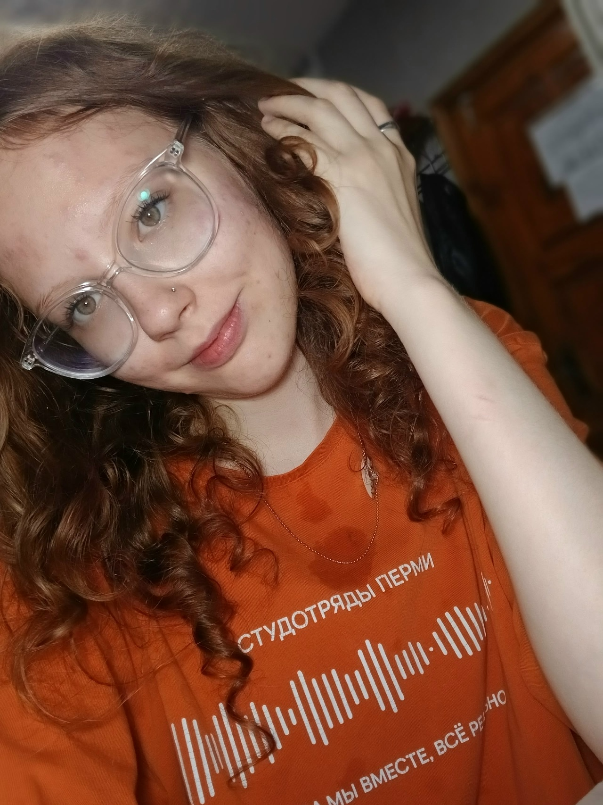
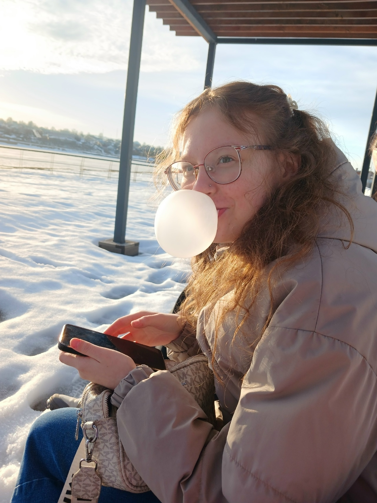
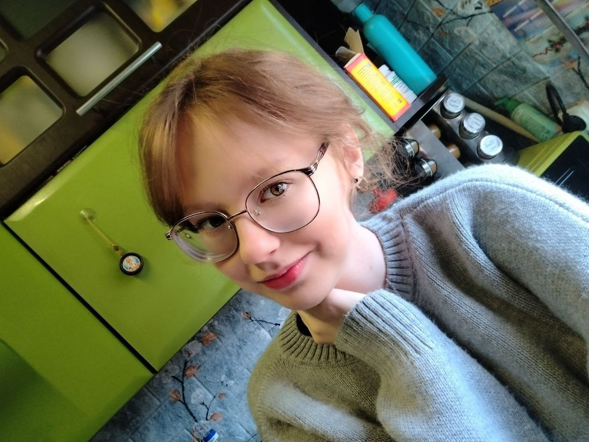
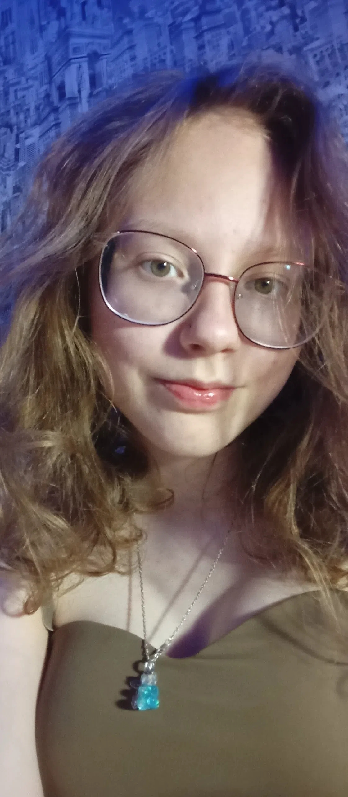
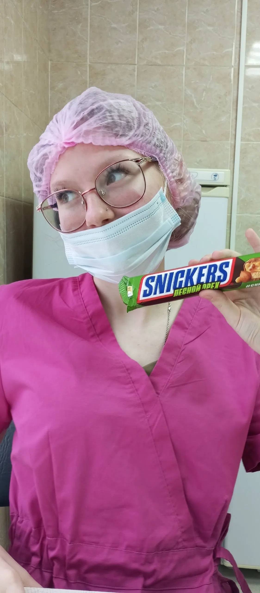

Nº 01Private Edition
MUSE°
The [Имя] Issue
тираж — один экземпляр
листай →
Выходные данные
Сделано вручную
Главный редактор — [твоё имя]
Фотограф — я же
Модель — ты
Корректор — никто, и это заметно
Вдохновитель — ты
Год — 2026
Тираж — один экземпляр
Всё, что здесь написано, — правда. Проверено редакцией. Многократно.
Издаётся без разрешения. Посвящается одной персоне. Другим не показывать.
Выходные данные02
От редактора
Почему этот номер существует
У каждого выпуска есть причина выйти. У этого причина простая: одна девушка не верит в собственную красоту, и это нужно исправить.
Обычно журналы ищут моделей. Здесь моделей не искали — её просто однажды увидели. И с того дня ничего не пришлось придумывать: только записывать.
Этот выпуск — про конкретного человека. Не про «типаж» и не про «стандарт». Про неё: с утренним неубранным пучком, с ладонями, которыми она поправляет волосы, с той самой паузой перед смехом.
Дальше — не мнение. Наблюдения. Читай медленно.
С уважением, редакция.
By [твоё имя] · Private circulation only
От редактора03
Содержание
В этом номере
- 05Портрет: открытиеона
- 06Этюды Iглаза · улыбка
- 07Этюды IIпрофиль
- 08Контактный лист5 кадров
- 09Слово после съёмкикурсив
- 10Тридцать причиноткрытие
- 21Тридцать причин: финалвывод
- 23В деталяхмелочи
- 24Азбука еёА→Я
- 25Гороскопправда
- 26Плейлистеё
- 27Интервью с собойтихо
- 28Реклама подпискинавсегда
- 29Реклама парфюмаМьюз
- 31Письмо · часть Iот руки
- 32Письмо · часть IIот руки
- 33Заметки на поляхмои
- 34Письма читателей(не)шуточно
- 35Рецепт вечеранаш
- 36Последнее словонажми
Содержание04
The Portrait
Съёмка без постановки
Кадры из личного архива. Здесь она настоящая — и именно поэтому это лучший материал выпуска.

Портрет05
Этюды · I
Глаза и улыбка
То, что нельзя нарисовать прилагательными. Приходится кадром.


когда она слушает — весь номер держится на этом
Этюды I06
Этюды · II
Профиль, вне кадра
То, что она делает, когда думает, что никто не смотрит.

лучшие кадры получаются, когда она забыла, что камера здесь
Этюды II07
Контактный лист
Пять из пяти
Отбор: в номер попало всё. Потому что все — настоящие.



Контактный лист08
“
Лучшие портреты — это не про то, как она выглядит. Это про то, как смотреть.Из редакторской колонки
Слово после съёмки09
The Feature
Тридцать причин.
Не рейтинг. Не список. Просто вещи, которые видно, если смотреть внимательно. По три на страницу — чтобы не спешила.
Причины10
Причины · I
Три из тридцати
- 01
Улыбка
Не «красивая». Та, после которой на секунду выключаются мысли.
- 02
Руки
Поправляет волосы, когда нервничает, и делает вид, что всё под контролем.
- 03
Смех
Смеётся над своей же шуткой раньше, чем её закончит. Это лучшая часть.
Причины 01–0311
Причины · II
Ещё три
- 04
Сила
Достаточно сильная, чтобы всё вынести. Достаточно живая, чтобы хотеть тихий вечер.
- 05
Взгляд
Когда слушает по-настоящему. В этот момент весь номер держится на нём.
- 06
Утро
Несобранное, без фильтров. Вот это и есть обложка.
Причины 04–0612
Причины · III
И ещё
- 07
Ум
Паузы не нужно заполнять. С ней хорошо и говорить, и молчать.
- 08
Доброта
Делает хорошее тихо, без свидетелей. Это редкая роскошь.
- 09
Сомнение
Имеет право не верить. Мы всё равно продолжим это печатать.
Причины 07–0913
Причины · IV
Следующая тройка
- 10
Терпение
Умеешь ждать, не давя. Это редкость и большое искусство.
- 11
Голос
Особенно когда ты говоришь тихо. Мне приходится наклоняться ближе.
- 12
Тепло
Входишь — и в комнате становится теплее. Без отопления.
Причины 10–1214
Причины · V
Три в строку
- 13
Честность
Говоришь как есть. Даже когда это неудобно. Особенно тогда.
- 14
Упрямство
В хорошем смысле. Не сдаёшься, когда надо не сдаваться.
- 15
Нежность
Не ко всем. Но кому надо — тому по-настоящему.
Причины 13–1515
Причины · VI
Середина списка
- 16
Молчание
Иногда лучше всех слов. Особенно когда мы вместе молчим.
- 17
Способность
Удивлять. Даже когда кажется, что уже всё про тебя знаю.
- 18
Музыка
Ты — это плейлист. У него нет плохих треков.
Причины 16–1816
Причины · VII
Ещё ближе
- 19
Кофе
Ты пьёшь его как ритуал. И я выучил, какой тебе нравится.
- 20
Сон
Ты во сне морщишь нос. Я это заметил. Я не спал.
- 21
Смелость
Пробовать новое, когда страшно. Это самый красивый вид смелости.
Причины 19–2117
Причины · VIII
Почти конец
- 22
Вкус
В еде, в людях, в вещах. Не ошибаешься. Почти никогда.
- 23
Умение
Слушать. По-настоящему. Так редко умеют.
- 24
Память
Помнишь мелочи, которые я сам забыл. И это трогает больше, чем надо.
Причины 22–2418
Причины · IX
И так далее
- 25
Свет
Когда заходишь — сразу становится светлее. Не спрашивай как.
- 26
Дом
Ты и есть это слово. Без стен и адреса.
- 27
Будущее
Всё, что я в нём вижу, — с тобой. И это не пафос. Это просто факт.
Причины 25–2719
Причины · X
Последние три
- 28
Утро вдвоём
Всё, что мне нужно от жизни, — это утро, в котором ты есть.
- 29
Как смотришь
Когда думаешь, что я не замечаю. Я замечаю. Всегда.
- 30
Просто ты
Не «красивая», не «шикарная», не «идеальная». Просто ты. И этого более чем достаточно.
Причины 28–3020
Причины · финал
И это только тридцать.
На самом деле их больше. Просто редакция устала считать. Продолжение — в следующем выпуске. Или в жизни.
подписка бессрочная
— от редакции
Причины · финал21
“
Некоторые люди заходят в комнату и меняют в ней воздух. Ты — из таких.Из редакторской колонки
Цитата I22
В деталях
Маленькие вещи
То, что не попадает в общие слова, но попадает в сердце.
- Как ты закусываешь губу, когда думаешь.
- Запах твоих волос утром — до кофе, до всего.
- Твой палец, который ищет мой, когда мы идём.
- Как ты смеёшься, а потом сразу смущаешься.
- Песня, которую ты включаешь первой, когда садишься в машину.
- Твоя привычка поправлять плед, чтобы он лежал «правильно».
- Как ты говоришь «ну ладно», когда на самом деле не ладно.
- Твой почерк. Он похож на тебя — живой и чуть неаккуратный.
В деталях23
Азбука её
От А до Я
Короткий словарь. Продолжение — бесконечное.
- А
Абсолютная
Не «почти». Не «в целом». Абсолютно.
- В
Весёлая
Смех — это первое, что я слышу, когда думаю о тебе.
- Д
Добрая
Тихо, без свидетелей. Так доброта и должна работать.
- Ж
Живая
Не картинка. Настоящая. Со всем, что к этому прилагается.
- К
Красивая
Не потому что я так сказал. А потому что это факт.
- Л
Любимая
Моя. И это не обсуждается.
- М
Моя
В смысле — не собственность. В смысле — я твой.
- Н
Настоящая
Без фильтров и без маски. Именно такая нужна.
- О
Особенная
Не «одна из». Просто особенная.
- Р
Редкая
Таких, как ты, — один экземпляр на весь тираж.
- Т
Тёплая
Как чай в холодный вечер. И как плед.
- Ш
Шикарная
Слово, которое ты всё ещё не хочешь принимать. Придётся.
- Я
Ясная
С тобой всё наконец на своих местах.
Азбука её24
Гороскоп
Прогноз на всегда
Сегодня.
Ты — шикарная. Это не обсуждается и не зависит от погоды.
Завтра.
Ты — шикарная. Потому что это не меняется от дня недели.
На неделе.
Всё то же самое. Возможны осадки в виде комплиментов. Ожидаются.
В этом году.
Ты — шикарная. Прогноз устойчивый, многолетний, не подлежит пересмотру.
В следующем.
То же самое. Мы проверяли.
составлено редакцией — не по звёздам, а по фактам
Гороскоп25
Плейлист
Песни, под которые ты — это ты
Не рекомендуем. Просто подслушали.
- 01Утренний кофемедленно
- 02По дороге куда угоднов окно
- 03Тот смех в 3:00громко
- 04Тихий вечер, пледс чаем
- 05Танцуешь, когда никого нетсмешно
- 06Та песня, что ты включишь, если рядом яодна
- 07Финальная, без слови это лучшее
Плейлист26
Интервью
С самим собой
Вопросы, которые я задаю себе о тебе. Ответы — я их знаю.
— Что я думаю, когда ты входишь в комнату?
— «Как мне так повезло.»
— Что я думаю, когда ты молчишь?
— «Я мог бы слушать это молчание вечно.»
— Что я думаю, когда ты смеёшься?
— «Вот. Вот она. Настоящая.»
— Что я думаю, когда ты не веришь мне?
— «Ничего. Я подожду. Я умею ждать.»
— Что я думаю, когда ты уходишь?
— «Уже хочу, чтобы ты вернулась. Так быстро?»
— Что я думаю сейчас?
— «Она сейчас читает это. И, может быть, улыбнулась. Вот это — лучшее.»
Интервью27
Рекламная полоса
MUSE · SUBSCRIPTION
персональный выпуск
Выпускается с 2024 года. Один экземпляр. Второго не будет.
Каждый номер — новый повод сказать: ты шикарная.
Доставка — в руки. В объятия. В сердце.
Бесплатно · Бессрочно · Пожизненно
отменить подписку невозможно. и не хочется.
Реклама · подписка28
Рекламная полоса
MUSE · PARFUM
аромат № 1
Верхние ноты
утренний кофе, твой голос, тишина
Средние ноты
моё сердцебиение, когда ты рядом
Базовые ноты
всё, что остаётся, когда ты уходишь
Не продаётся · Выдаётся одному человеку · Навсегда
Реклама · парфюм29
“
Не нужно быть идеальной. Нужно быть настоящей. С этим у тебя всё в порядке.Из редакторской колонки
Цитата II30
Письмо · часть I
От руки, без правок
Я не умею говорить это красиво вслух, поэтому написал.
Ты — человек, рядом с которым мне хочется быть лучше. Не из-за давления, а потому что ты сама светишься, когда тебе хорошо. И я хочу, чтобы тебе было хорошо чаще.
Если ты сейчас читаешь это и думаешь «ну он преувеличивает» — значит, я всё сделал правильно.
Потому что я не преувеличиваю. Я просто вижу тебя.
Письмо · I31
Письмо · часть II
Продолжение письма
И мне очень повезло.
Ты красивая. Не потому что я так сказал. А потому что это — факт. Такой же, как то, что после ночи наступает утро.
Ты шикарная. Не потому что ты стараешься. А потому что ты — это ты.
Ты моя. Не потому что я тебя выбрал. А потому что каждый день, просыпаясь, я снова выбираю тебя.
Всё. Больше нечего сказать. Дальше — только жизнь.
Письмо · II32
Заметки на полях
Мелкие мысли
То, что не вошло в основной текст, но важно.
- Слишком длинная пауза — плохо. Слишком короткая — тоже. Твоя — идеальная.
- Я запомнил запах твоих волос раньше, чем твоё имя. Ну, почти.
- Если ты сейчас читаешь и улыбаешься — я это вижу. Правда.
- Я не поэт. Я просто вижу. Разница есть, но не для тебя.
- Не все слова должны быть громкими. Некоторые — как ты: тихие, но лучше всех.
- Если однажды покажется, что я забыл, — перечитай страницу 4. Или страницу 27.
Заметки33
Письма читателей
Редакция отвечает
-
«Я не верю, что она такая красивая.» — читатель
Вы просто не видели. — Ред.
-
«А можно у меня будет копия?» — читательница
Нет. Выпуск один. Он её. — Ред.
-
«Я её знаю. Она правда такая.» — друг
Спасибо. Значит, я не сумасшедший. — Ред.
-
«А почему так мало страниц?» — постоянный читатель
Их столько, сколько нужно. — Ред.
-
«Она это читает?» — аноним
Сейчас — да. Привет. — Ред.
Письма читателей34
Кулинарная рубрика
Рецепт тихого вечера
Блюдо на двоих. Готовится без спешки.
Ингредиенты
— один ты, без макияжа
— один я, без телефона
— два пледа
— один фильм, который мы оба видели
— чай, по вкусу
— молчание, необязательно
Способ приготовления
1. Усадить тебя на диван.
2. Укрыть.
3. Принести чай.
4. Обнять.
5. Не отпускать.
Подача
Время приготовления — до утра.
Порций — две.
Повторяемость — сколько потребуется.
Рецепт вечера35
The Final Word
Если всё ещё не веришь
Тогда нажми. У редакции есть последняя страница — специально для этого случая.
Последнее слово36
Признание
Этот номер придумал не журнал.
Это я просто записал то, что вижу каждый день.
Это я просто записал то, что вижу каждый день.
Если понадобится — редакция будет выпускать его снова и снова, пока ты не поверишь. Подписка бессрочная.
Признание37
Посвящение
Эта страница оставлена тебе
Место, которое занимает только одно лицо.

Подпиши — и номер станет полным.
Посвящение38
Тираж
Тираж — один экземпляр.
Второй экземпляр не существует. Не будет переиздания. Не будет копии.
Береги его.
И себя.
Тираж39
Конец выпуска
MUSE°
тираж закончен
Nº 01 · Private Edition · Only one copy
MUSE40